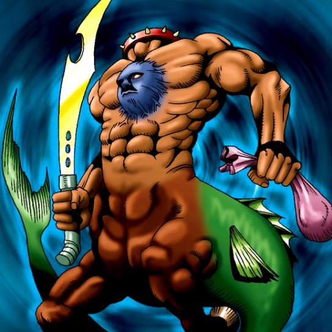

One Who Hunts Souls

Description: "Monsters destroyed in battles against One Who Hunts Souls cannot be revived once they are sent to the Graveyard."
STATS
ATK: 1100
DEF: 1000
DECK COST
Deck Cost per Card: 26
EFFECT NOT IMPLEMENTED